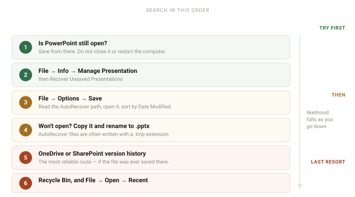

To recover an unsaved PowerPoint: first check File → Info → Manage Presentation → Recover Unsaved Presentations. If that is empty or missing, open File → Options → Save and read the AutoRecover file location field — that shows your actual folder, which varies by version. Then sort that folder by date and open the newest file.
Work through this in order. The steps are arranged by how likely they are to work and how fast they are, not by how technical they sound — so if step one succeeds you can stop reading.
Before anything else: if PowerPoint is still open, do not close it, do not end the task, and do not restart the computer. An unsaved presentation that is still in memory can often be saved from where it sits. Every remaining step on this page is harder than that one.
Where to look, in order
-
Try to save from the running app
If PowerPoint is still open — even in a crashed or unresponsive state — try Ctrl+S (⌘S on Mac) and see whether it offers you a Save As dialog. A presentation that was never given a filename can sometimes still be written to disk this way.
If PowerPoint has crashed and offers to recover on restart, accept it and save immediately to a real file before doing anything else.
-
Check Recover Unsaved Presentations
Open PowerPoint and go to File → Info → Manage Presentation → Recover Unsaved Presentations.
This entry only appears when PowerPoint has detected unsaved files from a previous session, so its absence does not mean there is nothing to find — it means you should go to the next step. When it does appear, it opens a folder containing the recovered files.
-
Read your actual AutoRecover folder path
This is the step most guides get wrong: they hand you a hardcoded path that may not exist on your machine. Instead, ask PowerPoint where it is actually writing.
Go to File → Options → Save and read the AutoRecover file location field. That is the real folder for your installation — copy it and open it in File Explorer.
Typical locations, for reference only: on Windows it is usually somewhere under
%APPDATA%\Microsoft\PowerPoint\, and unsaved drafts sometimes appear under%LOCALAPPDATA%\Microsoft\Office\UnsavedFiles\. Treat these as hints — the field in Options is the authoritative answer. -
Sort that folder by date and open the newest file
AutoRecover writes on a timer, so there may be several candidates. Sort by Date Modified, newest first, and open the top one in PowerPoint.
These files often have a
.tmpextension. If PowerPoint refuses to open one, copy it somewhere safe, rename the copy so it ends in.pptx, and try again.Copy before renaming. If the file turns out not to be recoverable you have lost nothing, and you keep the original untouched for another attempt.
-
Check OneDrive or SharePoint version history
If the presentation was ever saved to OneDrive or SharePoint — even briefly, even under a name you have forgotten — then versions of it exist in the cloud.
Find the file in File Explorer or in the OneDrive web interface, right-click it, and choose Version history. You can open or restore any earlier version.
This is the most reliable recovery route that exists, which is why the prevention advice at the bottom of this page amounts to "save to OneDrive."
-
Check the Recycle Bin and your recent files
Two quick checks that cost nothing. Look in the Recycle Bin for a deleted copy, and open File → Open → Recent to see whether the presentation is listed under a name you do not remember choosing.

Why the file might not be recoverable
It is worth knowing the limits, so you can tell quickly whether to keep searching or start again.
- AutoRecover works on a timer, not continuously PowerPoint writes a recovery copy every few minutes. A presentation that was created and lost inside that window was probably never written to disk at all — there is nothing to find.
- It only helps if the app had time to notice A power cut or a hard crash can take the recovery file with it. This is exactly the case where cloud version history saves you, provided the file had been saved once.
- Renaming a .tmp file does not always work Sometimes the recovery file is a partial write and simply is not a valid presentation. Try it, but do not spend an hour on it — move on to the OneDrive check.
Make sure it does not happen again
Two settings, about sixty seconds of work, and you never have to read this page again.
- Shorten the AutoRecover interval File → Options → Save, and set Save AutoRecover information every to 5 minutes or less. The default is 10, which is long enough to lose real work.
- Keep the last version if you close without saving On the same settings screen, tick Keep the last AutoRecovered version if I close without saving. This is what catches the "I hit Don't Save by reflex" accident, which is the single most common way people lose a presentation.
- Save to OneDrive by default File → Options → Save, and tick Save to Computer by default only if you have a reason to. Left on OneDrive, every save becomes a recoverable version — which turns this entire page into a non-issue.
Frequently asked questions
- Where does PowerPoint save unsaved files?
- To the folder shown in File → Options → Save under AutoRecover file location. Do not rely on a path from a guide — including this one — because the folder differs between versions and installations. Read it from Options and you have the right answer for your machine.
- Can I recover a PowerPoint I never saved once?
- Sometimes, if the app stayed open long enough to write an AutoRecover copy. AutoRecover runs on a timer, so a presentation created and lost within that interval was likely never written to disk. Check Recover Unsaved Presentations and the AutoRecover folder regardless — it costs nothing to look.
- How often does PowerPoint autosave?
- Every 10 minutes by default. Change it in File → Options → Save; five minutes or less is sensible for long presentations.
- Does OneDrive keep old versions of PowerPoint files?
- Yes, and it is the most dependable recovery method available. Files saved to OneDrive or SharePoint keep version history you can browse and restore. It only applies to files that were saved at least once.
- Why is Recover Unsaved Presentations not showing?
- That menu entry appears only when PowerPoint has detected unsaved files from a previous session. If it is missing, go straight to the AutoRecover file location from File → Options → Save and search there instead.
Official references
- Recover your Microsoft 365 files AutoRecover, and where Microsoft 365 keeps files you never saved.
- Recover an earlier version of an Office file Restoring a previous version from inside the file.